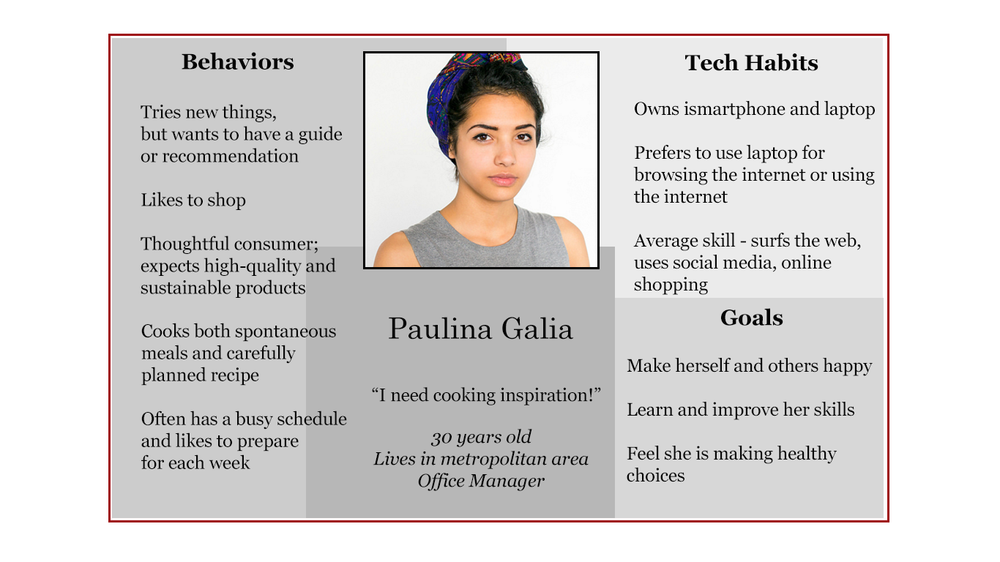

Williams - Sonoma Cooks

Opportunity
How can Williams-Sonoma improve customers' experiences beyond the products they buy?
Solution
A web experience that allows users to browse and book cooking classes
Role
This was a solo project. My design process included research, planning, design and iteration.
Process
The two week sprint included:
Analysis of Williams-Sonoma and its competitors (specifically those with cooking classes)
Research on home cooks' habits and goals
Discovery of what information users need when choosing cooking classes
Simplification of the global navigation based on what users want on the Williams-Sonoma website
Three rounds of user testing
I found that users are looking for cooking inspiration, opportunities to learn, and the ability to purchase tools online. My persona hypothesis, Paulina, guided gave me an anchor to refer back to during the design process.

Results & Learning
Over mulitple iterations, I designed a simplified navigation that was intuitive for users. Usability testing was an extremely valuable process; I produced rapid iterations was able to observe the improvements between versions.
I struggled to design an interative shopping list. It became clear through research and testing that users did not understand the function of tracking purchases through Williams-Sonoma. I think that until Williams-Sonoma develops their consummable product selection further, it should hold off on including a checklist. On the other hand, I felt more confident designing the class-registration process because I had many validated insights about what users wanted.
© Adrienne Kahan 2016